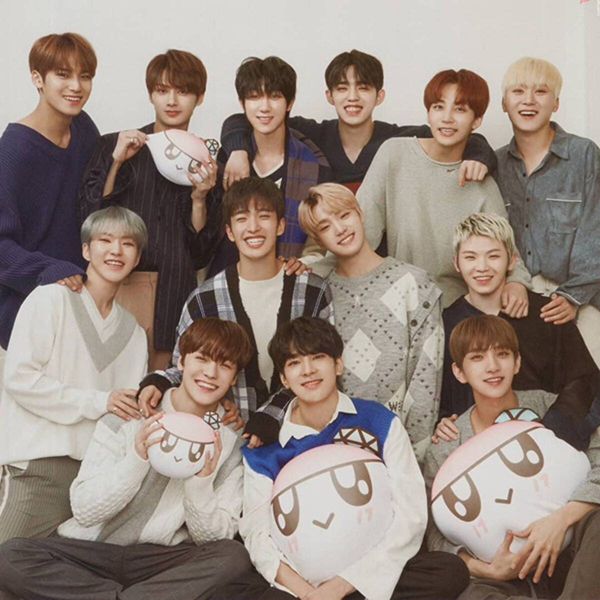

Seventeen memulai debutnya pada tanggal 26 Mei 2015
dengan lagu “Adore U” dipanggung MBC Music. Lagu tersebut
merupakan lead track dari album mini pertama Seventeen
berjudul ‘17 Cara’t yang baru resmi diluncurkan pada tanggal
29 Mei. Sukses dengan debutnya, Seventeen mengeluarkan album
mini keduanya bertajuk ‘Boys Be’ pada tanggal 10 September
2015. Merekapun promosi lagu andalanya yaitu “Mansae” di
program-program musik mingguan. Meski baru debut, Seventeen
sudah mendapat beberapa penghargaan, seperti di Golden Disk
Awards, Seoul Music Awards dan Gaon K-Pop Chart Awards.
Selain itu juga, Seventeen merupakan satu-satunya grup
k-pop yang masuk daftar di Billboard “21 Under 21 2015”.
Setelah menggelar konser solonya bertajuk “Like Seventeen
– Boys Wish” pada bulan Februari 2016 lalu, mereka langsung
menetapkan nama fandomnya, yaitu CARAT. Mereka juga
mengumumkan kalau akan segera comeback dengan album pertama.
Setelah persiapan matang, akhirnya Seventeen comeback dengan
lagu “Pretty U” dari album perdananya ‘Love & Letter’ yang
resmi dirilis pada tanggal 25 April 2016. Sejak debut pada
bulan Mei 2015 lalu, akhirnya Seventeen meraih trofi pertamanya
dipanggung Show Champion pada tanggal 4 Mei 2016 dengan lagu
“Pretty U”.